GitLab is an application that offers combined functionality as git repository, issue tracker, and CI/CD platform. The ALCF implementation of the GitLab-CI environment leverages upstream GitLab runners combined with the ECP's Jacamar custom executor. As CI/CD is built directly into GitLab, it can allow for tighter devops processes.
GitLab-CI is meant to provide CI/CD services for projects using GitLab-CI to store your git repositories and executing code on our HPC clusters. ALCF does not allow users to join your own private runners to our existing GitLab CI/CD environment and provides dedicated runners for our supported systems.
Additional information, technical and user documentation, and community support can be found on GitLab's Runner website.
ALCF's GitLab-CI environment can be accessed by logging into the ALCF GitLab-CI web portal using your ALCF credentials (ALCF username and cryptocard token password).
ALCF Support will add the ALCF Project to the appropriate system(s) via the Account and Project management system.
ALCF will create a GitLab Group/SubGroup for the ALCF Project and map it to the appropriate ldap group that maps to the ALCF Project
ALCF Support will reply back to the user and inform them that the project is created.
User(s) will need to login to gitlab-ci.alcf.anl.gov and configure their initial GitLab profile. Users will add an SSH key so they can pull/push code to the gitlab server.
User will then need to create a GitLab Project in your assigned GitLab Group/SubGroup.
CI/CD needs to be enabled for the GitLab Project.
When ready to run CI/CD jobs, users will add add a .gitlab-ci.yml file to your git repositories.
# this include allows us to reference defaults in anl/ci-resource/defaults
include:
- project: 'anl/ci-resources/defaults'
ref: main
file:
- '/runners.yml'
stages:
- polaris_batch # stages may have any name
# the below submits a batch job to the scheduler
submit_batch: # CI jobs may have any name
stage: polaris_batch # from the stages list above
extends: .polaris-batch-runner # this includes the defaults provided in the 'anl/ci-resources/defaults' project
variables: # scheduler parameters must be included, adjust the below to match your values
ANL_POLARIS_SCHEDULER_PARAMETERS: "-A ProjectName -l select=1,walltime=10:00,filesystems=home -q myQueue"
script:
- id
- hostname
- echo "Running on $(hostname) with setuid shell runner"
Group - A collection of projects. Certain settings can be applied at the Group level and apply down to all child SubGroups and/or Projects. When a ALCF Project is allocated resources on the GitLab-CI environment we will create a GitLab Group that will map to your ALCF Project allocation.
Jacamar-CI - A Custom Executor we use that runs jobs as a given user on the shell and is capable of submitting jobs to schedulers like Cobalt and PBS.
Job - An individual set of commands that are ran. This is the lowest unit of GitLab-CI abstraction.
Pipeline - GitLab organizes your jobs for each run into a pipeline.
Project - GitLab Projects can be thought of as an individual git repository plus all services and features GitLab layers on top. This term is unrelated to the ALCF Project concept. ALCF Projects often map to ldap groups and/or quotas and allocations.
Stage - A collection of jobs in a pipeline. Jobs in the next stage will not start till the jobs in the current stage complete. If a job fails, the pipeline will not run the following stages by default.
Triggering User - The user whose actions causes a CI/CD job to run and who the Jacamar-CI executor will run the jobs as. Examples include pushing commits up to the server, creating a merge request, and/or merging one branch into another branch.
Projects Using CI/CD
Any project with a git repository on the GitLab-CI environment has access to the CI/CD environment by default. In order to launch a shell job on a system you must already have access to that system.
On-Boarding with CI/CD
To gain access to the GitLab-CI environment, send an email to support@alcf.anl.gov requesting access for your project(s).
Include with the request:
That you are requesting access to the GitLab-CI environment at https://gitlab-ci.alcf.anl.gov
The ALCF Project shortname
The PI’s name
GitLab-CI jobs run as the triggering user on relevant systems. The triggering user's home directory will be used by Jacamar-CI to copy the git repository and cache files into ~/.jacamar-ci. This job will run out of their home directory and consume filesystem quota. If you need more space you should try to reference files in any ALCF Project allocations you have on shared filesystems. Unfortunately the initial git clone must run out of ~/.jacamar-ci in your home directory.
The triggering user is defined as the user account who caused the CI/CD pipeline to execute. Via scheduling a re-occurring job, pushing commits up to the server, creating a merge request, and/or merging a branch. When the CI/CD jobs run they will run as that user on the relevant systems. For a job to succeed the triggering user must have appropriate permissions and access to all relevant systems and files.
Once logged in, add your public key you already have or created earlier so that it can be associated with your account.
Click Profile icon on the upper right hand corner, then click "Edit Profile"
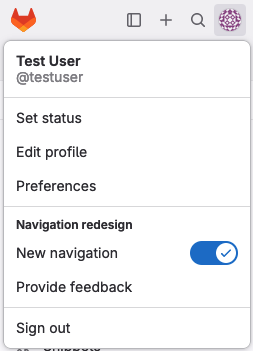
GitLab Profile Dropdown screenshot
Click "SSH Keys" on the left hand menu.
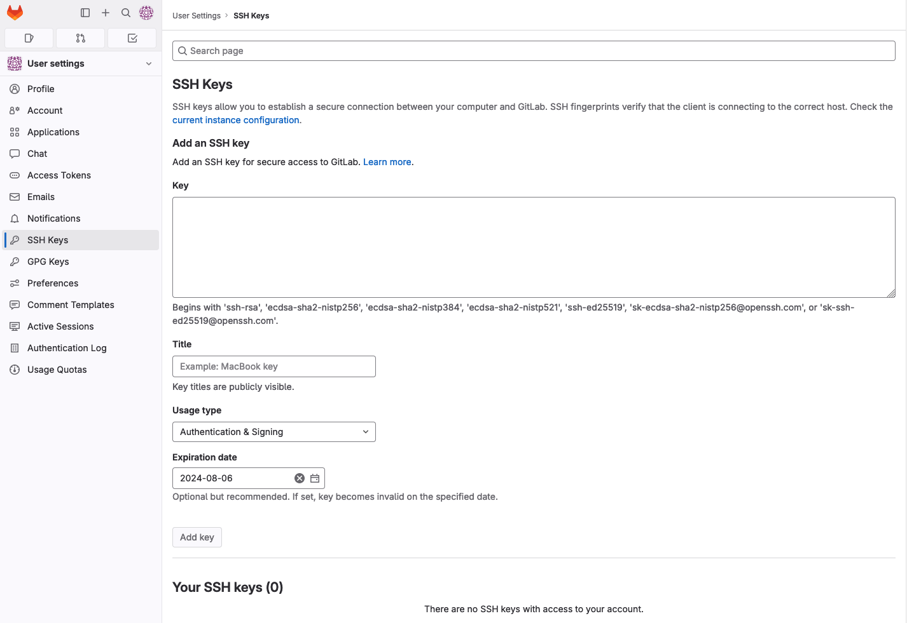
GitLab Profile Add SSH Key screenshot
Copy/Paste in your SSH public key into the large text box under the word Key
On Linux, Unix, and OSX based systems using OpenSSH your SSH public key is commonly found at ~/.ssh/id_rsa.pub. If using windows you will need to consult your applications documentation on the location of your public key.
Give it a descriptive title such as the where the key resides, by default it will extract the name from the end of the public key if possible.
Click the Add Key button. The button is disabled until you paste a key.
GitLab Projects (repositories)
GitLab takes a git repository, adds additional functionality, and calls it a GitLab Project. This is the most common level you will be interacting with GitLab at. Please do not confuse ALCF Projects with GitLab Projects as they are two separate things. ALCF Projects more closely map to the GitLab Group/SubGroup concept; which we explain in the next section.
Once you are assigned access to a GitLab Group/SubGroup you will be able to create arbitrary GitLab Projects underneath. Configuring CI/CD jobs for each independently.
To create a new GitLab Project:
In the left pane, click "Groups", and then click "Explore groups" link on the right.
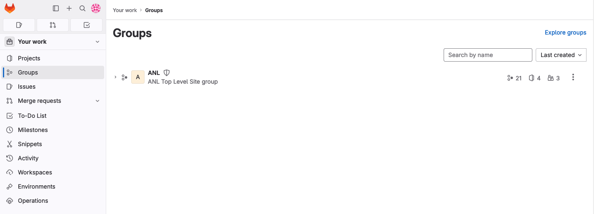
GitLab Your Groups Page screenshot
From the list in the "Explore groups" page, click the group you were informed corresponds to your ALCF Project
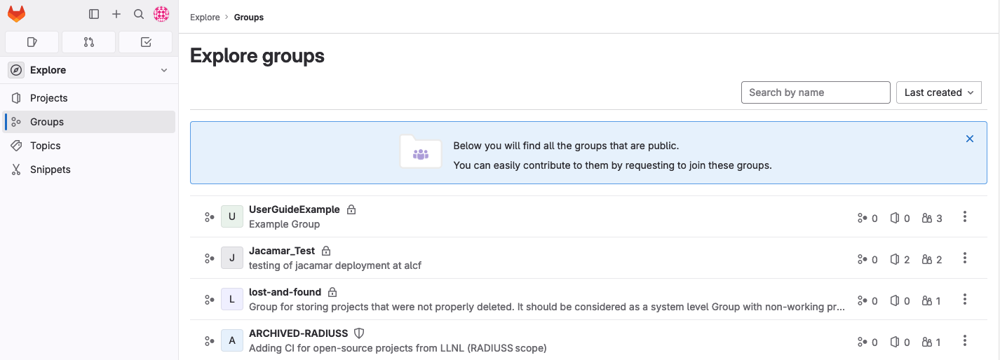
GitLab Explore Groups Page screenshot
Click the New project button near the upper right. If this is the first project you are creating you will have two large square buttons near the middle of the screen to create GitLab SubGroups or GitLab Projects
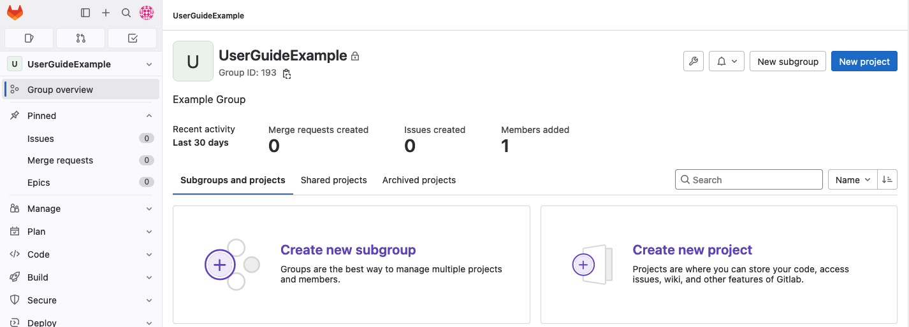
GitLab Empty Group Page screenshot
On the Create new project page, click Create blank project
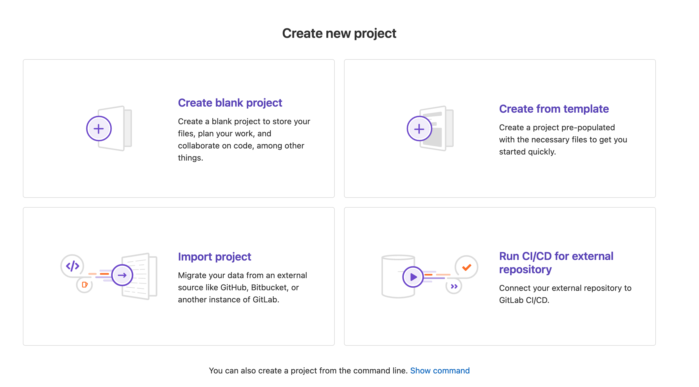
GitLab Create New Project screenshot
Fill in the Project Name field. The Project slug field will auto populate based on the Project Name, do not change it. If you are pushing an existing repository, you MUST uncheck the default Initialize repository with a README option. Failure to uncheck this option will result in a merge conflict that you will need to resolve manually between your existing "local" git repository and the one you just created on the server.
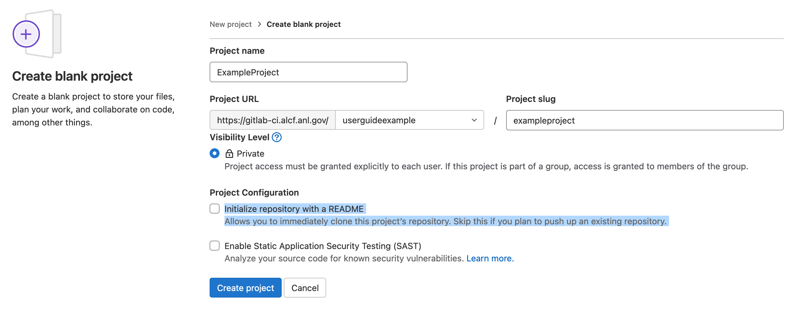
GitLab Create New Project screenshot
Click Create project button near the bottom
After creating the project, navigate to "Settings" > "General", Expand the "Visibility, project features, permissions" section and enable the "CI/CD" toggle.
GitLab Groups/SubGroups (Folders)
GitLab organizes GitLab Projects into "folders" called Groups or SubGroups. When an ALCF Project is granted access to GitLab-CI a GitLab Group will be created with access for all members of that ALCF Project. Users will then be able to create arbitrary GitLab Projects.
Each ALCF Project will have a top-level Group or SubGroup created with the ALCF Project’s name. It is used for organization in the multi-project environment and is required for implementing the needed level of security. The Group folder is where all of the your GitLab Projects are to be stored, you can additionally create new SubGroups, Projects, group variables, etc within your designated Group, SubGroups, and/or Projects.
To create a new GitLab SubGroup:
In the left pane, click "Groups", and then click "Explore groups" link on the right.
GitLab Your Groups Page screenshot
From the list in the "Explore groups" page, click the group you were informed corresponds to your ALCF Project
GitLab Explore Groups Page screenshot
Click the New subgroup button near the upper right. If this is the first project you are creating you will have two large square buttons near the middle of the screen to create GitLab SubGroups or GitLab Projects
GitLab Empty Group Page screenshot
On the Create subgroup page, enter the Subgroup name. Subgroup slug will auto populate, do not change it.
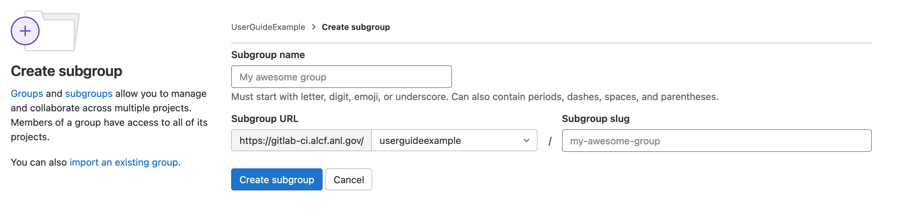
GitLab Create New SubGroup screenshot
Click Create subgroup button near the bottom
GitLab Runner Nodes
Each system is assigned one or more GitLab runner node(s) that are shared by all users in GitLab-CI. Each runner is only capable of running one users pipeline at a time. While multiple jobs in that pipeline may run in parallel.
Each node will have two runners available, shell and batch. shell will run shell jobs directly on the runner node as the user. batch will submit the job to the HPC cluster's scheduler that is paired to that node. You will need to select the appropriate runner in your .gitlab-ci.yml file for the job to be executed properly. For more details on the .gitlab-ci.yml file, please see upstream docs.
.gitlab-ci.yml Configuration Sections
GitLab uses a per repository .gitlab-ci.yml file. On any commit, merge request, or merge gitlab will attempt to trigger a CI/CD pipeline based on the contents of this file. Within the .gitlab-ci.yml file you can limit jobs to only run under certain conditions. A common workflow is to have linting and validation happen on every commit to a non-master/non-main branch. Larger more complex tasks are then performed when that branch is merged back into master/main. All jobs launched on a given event are organized into a Pipeline. You can watch the progress of your pipeline via the CI/CD pipeline page for your Project.
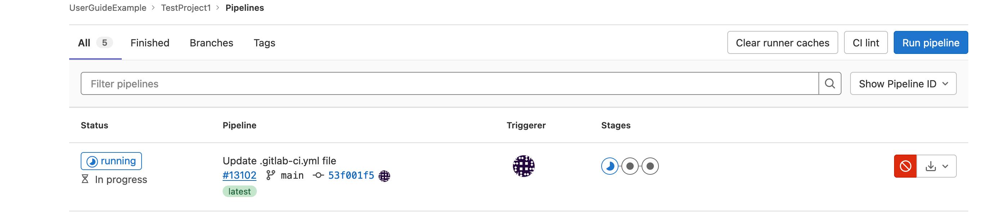
GitLab Group and Projects screenshot
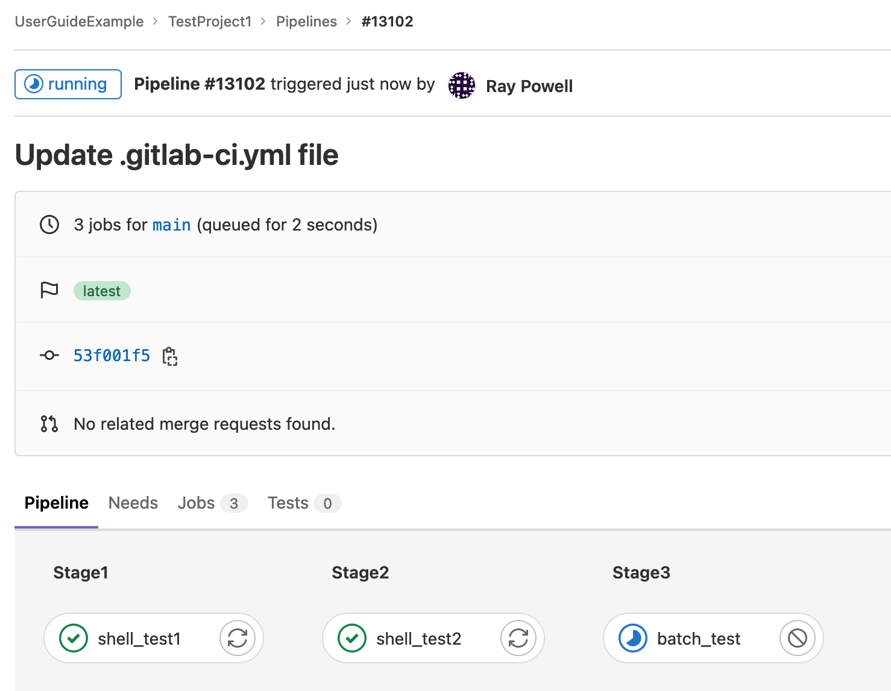
GitLab Group and Projects screenshot
Tags
Tags are used to select which runner a job will be sent to. Improper tags can prevent your job from running and result in a failed job.
Tags should be added by extending the defaults in the 'anl/ci-resources/defaults' runner.yml file. ALCF specific tags are described here in case overrides are needed.
ALCF Specific tags
Two tags are necessary to run on our systems. One tag will select which cluster the jobs are sent to. The other will determine if the job is to be run locally on the gitlab runner host, or if it is to be submitted to a job scheduler on an HPC cluster.
Cluster Tag(s)
Cluster
tag
Description
Polaris
polaris
This tag will send jobs to the Polaris HPC runners
Job Type Tag(s)
tag
Description
shell
This tag will execute the job locally on the gitlab runner host.
batch
This tag will submit the job to the HPC cluster's job scheduler.
Variables
Variables can be stored two ways, inline in the .gitlab-ci.yml file or as a setting in the GitLab Group or Project itself. Variables are exported as environment variables by gitlab-runner for each job and can be used inside the .gitlab-ci.yml file.
GitLab also has a list of predefined variables available in every GitLab CI/CD pipeline.
To set a variable directly in the .gitlab-ci.yml file, declare a variables: section with each VariableName: "VariableValue" being on its own line. variables: can be declared globally or in individual jobs.
Example: Declaring variables
variables:
GlobalVariable1: "Global Value 1"
GlobalVariable2: "Global Value 2"
job:
variables:
LocalVariable: 'This is a local variable'
script:
- 'echo $LocalVariable'
To store variables in the Group or Project settings, in the left side menu, click Settings>CI/CD. Expand the Variables option on the right side frame. You can then add variables by clicking Add variable.
For for more details please set please see the upstream docs
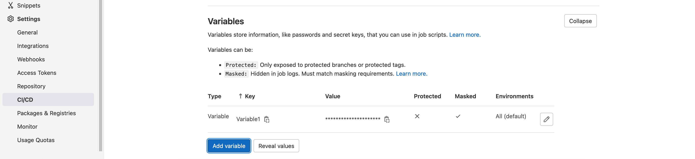
GitLab Group and Projects screenshot
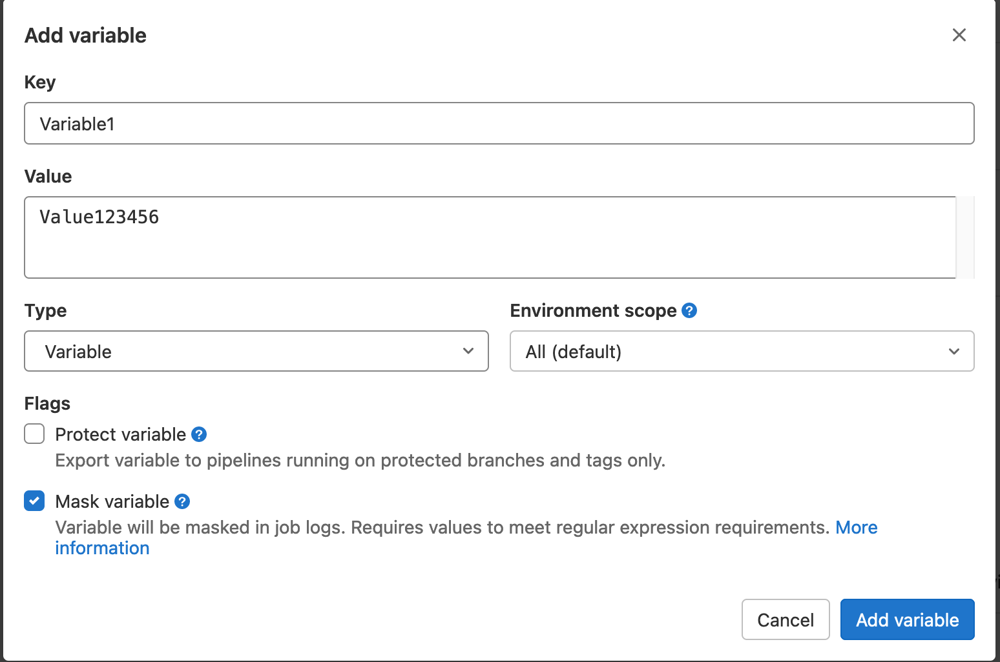
GitLab Group and Projects screenshot
ALCF Specific Variables
If you are planning to submit jobs to a scheduler then you will need to specify a per system variable ANL_${CLUSTER}_SCHEDULER_PARAMETERS; where ${CLUSTER} is the name of the cluster. This variable will contain any command line flags you would need to submit jobs as if you were on the command line / scripting. Please consult the below table for more info.
Jobs can be organized into stages. Jobs in the next stage will not start until all dependencies in the previous stage have completed. This is often used if there building and testing steps required before code may be ran or packaged. These stages are assembled in a Pipeline, a directed graph of stages. By default GitLab includes the following stages executed in the below order :
.pre
build
test
deploy
.post
You may declare your own stages by first declaring a stages: array near the top of your .gitlab-ci.yml file. Stages will be processed in the order given in the array.
Example: Declaring Stages
stages:
- stage1
- stage2
- stage3
Example: Pipeline with custom stages
# this include allows us to reference defaults in anl/ci-resource/defaults
include:
- project: 'anl/ci-resources/defaults'
ref: main
file:
- '/runners.yml'
variables:
ANL_POLARIS_SCHEDULER_PARAMETERS: "-A ProjectName -l select=1,walltime=10:00,filesystems=home -q myQueue"
stages:
- stage1
- stage2
test1:
stage: stage1
extends: .polaris-shell-runner
script:
- export
- id
- hostname
- echo "Running with setuid shell runner"
- echo test > test.txt
test2:
stage: stage2
extends: .polaris-batch-runner
script:
- echo "Job 2 start"
- aprun -n 1 id
- aprun -n 1 hostname
- aprun -n 1 echo "Running with setuid batch runner"
- echo "Job 2 end"
Rules
GitLab allows for CI/CD jobs to be launched only if certain conditions are met. GitLab sets a series of variables in addition to any the user explicitly sets when a job launches. A job can check these variables and choose to run or not based on the results. This is often used to ensure certain jobs only run on commits, merge requests, and/or merges. By default if any rule matches it will run. You can override this behavior with commands like when: never when a conditional matches.
For more details please set please see the upstream docs
Rules can use the following conditional checks:
if
changes
exists
allow_failure
variables
when
Example: GitLab job designed to only run on merge requests
test1:
rules:
- if: $CI_COMMIT_TAG # Do not execute jobs for tag context
when: never
- if: $CI_COMMIT_BRANCH == "master" # Do not run on master, since will run on the merge request just prior
when: never
- if: $CI_MERGE_REQUEST_IID # CI_MERGE_REQUEST_IID exists, so run job
stage: stage1
extends: .polaris-shell-runner
script:
- echo "Run test 1"
Job Scheduling
GitLab provides pipeline scheduling functionality to support recurring pipelines, specified using a Cron-like syntax. Pipeline scheduling is available in the project sidebar under "Build" > "Pipeline schedules". For more details, see the upstream documentation.
Template Jobs
GitLab allows you to create template jobs, these are pieces of job specifications which can be included in jobs. Each template job name must begin with a period (.) and follow the same syntax as normal jobs. To instantiate a job based on the template job use the keyword extends. If your specific job declares a key/value already in the template, the specific job will overwrite it.
Example: Use a job template so two tests will only run on merge requests
.MR_rules:
rules:
- if: $CI_COMMIT_TAG # Do not execute jobs for tag context
when: never
- if: $CI_COMMIT_BRANCH == "master" # Do not run on master, otherwise runs everything from scratch on merge
when: never
- if: $CI_MERGE_REQUEST_IID
- if: '$CI_PIPELINE_SOURCE == "merge_request_event"'
test1:
extends: .MR_rules
stage: stage1
extends: .polaris-shell-runner
script:
- echo "Run test 1"
test2:
extends: .MR_rules
stage: stage2
extends: .polaris-shell-runner
script:
- echo "Run test 2"
Console Output
To see the output of a job click on it in the GUI and it will show the STDOUT and STDERR from the job run. If the job did not launch successfully it will have error messages from gitlab-runner or Jacamar-CI or both.
Please be aware of any sensitive data you do not want exported or saved to the output console, such as passwords.
Please do not output large amounts of data from your jobs to the stdout. If your CI/CD job outputs large amounts of text to STDOUT or STDERR, consider redirecting it into a job log.
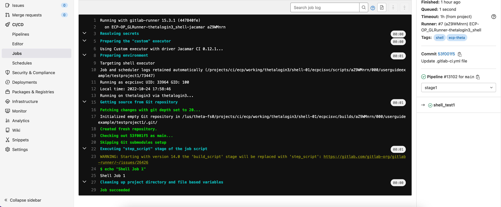
GitLab Group Job Console
Storage Use and Policy
GitLab Project Quota
Each repository has a default quota of 1GB. Quota increases may be requested by emailing Support. This quota is separate from the storage quotas allocated to ALCF Projects and ALCF Users on the HPC clusters and shared filesystems.
CI/CD Filesystem usage
CI/CD jobs will run out of your home directory by default. Each job will begin by cloning the repository into a path under ~/.jacamar-ci and will continue to write there unless you reference other destinations in your CI/CD job. You will need to ensure that you have the minimum amount of space for this runner operation. If you do not, the job will fail to run. Each gitlab runner will create a new sub directory under ~/.jacamar-ci for itself, however it will reuse space for subsequent pipelines launched for that project on that runner.
It is recommended that if you need more space then your home directory can provide, that you leverage any ALCF Project space you may have been allocated on a shared filesystem.
GitLab-CI Access Termination Policy
Projects that have been inactive for at least 6 months will have their access disabled and their repositories deleted. Notification will be sent to the PI 30 days prior to the day of the action.
Inactivity is defined as, but not limited to:
No new projects created
No new commits to an existing project
Prolonged period of continuously failing CI/CD jobs (In the case of re-occurring scheduled jobs)